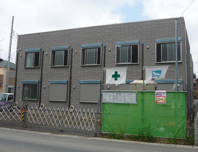

アミックスの新築アパート完成内覧会のお知らせ
アミックスでは、アパート完成時に内覧会を行っております。アパート建築・経営にご興味のあるかた、あるいはアパートのクオリティを実際にご覧になりたいかたはぜひお気軽にお越しください。
＊説明が不要なお客様は、スタッフの案内なしでもご自由にご覧いただくことができます。
また、事前のご予約も不要です。スタッフ一同心よりお待ちしております。
ご都合のつかない方は、別の日にご案内もできますのでご連絡下さい。尚、ご案内する物件は異なる場合がございます。
≫内覧会のようすはコチラから
［過去の内覧会］
≫2019年
≫2018年
≫2017年
≫2016年
≫2015年後半 ≫2015年前半
≫2014年後半
≫2014年前半
≫2013年後半 ≫2013年前半
≫2012年 ≫2011年
≫〜2010年
2012年12月15日（土）・16日（日）葛飾区白鳥会場
お花茶屋駅より徒歩7分です。年末のお忙しい時期ですが、ぜひお越しください。
場 所：葛飾区白鳥3-3
日 時：2012年12月15日（土）・16日（日） 10:00-16:00
2012年2012年12月15日（土）・16日（日）足立区興野会場

カラーアズSに太陽光発電を取り入れた個性的なアパートです。ぜひお越しください。
場 所：足立区興野2-30
日 時：2012年12月15日（土）・16日（日） 10:00-16:00
2012年12月1日（土）・2日（日）板橋区成増会場
楽器演奏が可能な防音室付きのファミリータイプです。希少性の高いアパートです。ぜひご覧ください。
場 所：板橋区成増1-5
日 時：2012年12月1日（土）・2日（日） 10:00-16:00
2012年7月22日（日）・23日（月）北区滝野川会場
都営三田線西巣鴨駅から徒歩4分と駅近なので、ぜひお越しください。
場 所：北区滝野川7-46-10
日 時：2012年7月22日（日）・23日（月） 10:00-16:00
2012年7月13日（金）・14日（土）埼玉県八潮市垳会場
【7月15日（日）予約制内覧会開催！】
人気のカラーアズHのアパートです。
個別に案内して欲しいというご要望にお応えするため、7月15日に担当者が詳しくご説明する「予約制内覧会」を開催します。この機会にぜひお越しください
場 所：埼玉県八潮市垳421
日 時：2012年7月13日（金）・14日（土） 10:00-16:00
予約制内覧会 2012年7月15日（日）予約は03-3620-9111まで
2012年6月23日（土）・24日（日） 江戸川区春江町会場
1棟がクラシックタイプ、もう1棟がカラーアズHタイプ。2種類を一度に見学できます。
場 所：江戸川区春江町５-２７-８
日 時：2012年6月23日（土）・24日（日） 10:00-16:00
2012年6月16日（土）・17日（日） 江戸川区西篠崎
気候がよいので、ぜひお気軽に足をお運びください
場 所：江戸川区西篠崎２-２２-１１
日 時：2012年6月16日（土）・17日（日） 10:00-16:00
2012年6月9日（土）・10日（日） 埼玉県八潮市垳会場
【6月11日（月）予約制内覧会開催！】

人気のカラーアズHのアパートです。
個別に案内して欲しいというご要望にお応えするため、6月11日に担当者が詳しくご説明する「予約制内覧会」を開催します。この機会にぜひお越しください
場 所：埼玉県八潮市垳352・354
日 時：2012年6月9日（土）・10日（日） 10:00-16:00
予約制内覧会 2012年6月11日（月）予約は03-3620-9111まで
2012年4月22日（日） 大田区西糀谷会場
カラーアズHの制震アパートです。糀谷駅から徒歩3分と駅近なので、ぜひお越しください。
場 所：東京都大田区西糀谷4-16-12
日 時：2012年4月22日（日） 10:00-16:00
2012年4月21日（土）・22日（日） 足立区加平会場
クラシックの内覧会です。暖かくなってきましたので、ぜひお気軽にお越しください。
場 所：足立区加平1-11-未定
日 時：2012年4月21日（土）・22日（日） 10:00-16:00
2012年3月24日（土）・25日（日） 足立区西綾瀬会場
25年前にアミックスのアパートを建てていただいたオーナー様からの建替え物件。
室内が和モダンの制震アパートです。
場 所：足立区西綾瀬3-35-16
日 時：2012年3月24日（土）・25日（日） 10:00-16:00
2012年3月18日（日）・19日（月） 葛飾区亀有会場
下町風情で人気の亀有にアミックスの定番アパートが完成予定です。
場 所：葛飾区亀有2-18-16
日 時：2012年3月18日（日）・19日（月） 10:00-16:00
地 図：
大きな地図で見る
≫詳細はこちら(pdf)
2012年3月18日（日）・19日（月）・20日（祝） 江戸川区鹿骨会場
定番のクラシックシリーズ好調です。飽きのこないデザインが人気の秘密です。少しあたたかくなる季節にぜひお越しください。
場 所：江戸川区鹿骨1-42（ナック・エム）
日 時：2012年3月18日（日）・19日（月）・20日（祝）10:00-16:00
2012年3月10日（土）・11日（日） 練馬区豊玉中会場
省エネ住宅・独立洗面化粧台付・オートロック付で、しかも居室が広めです。入居者さまに快適なお部屋になっております。
場 所：練馬区豊玉中2-20-4
日 時：2012年3月10日（土）・11日（日） 10:00-16:00
地 図：
大きな地図で見る
≫「ただいま建築中」で今までの様子がご覧いただけます。
≫詳細はこちら(pdf)
2012年3月3日（土）・4日（日） 江戸川区鹿骨会場
人気のクラシックシリーズ。シックな外観が自慢のアパートです。この機会にぜひご覧ください。
場 所：江戸川区鹿骨1-29-20（マール・ヒロ）
日 時：2012年3月3日（土）・4日（日） 10:00-16:00
地 図：
大きな地図で見る
≫「ただいま建築中」で今までの様子がご覧いただけます。
≫詳細はこちら(pdf)